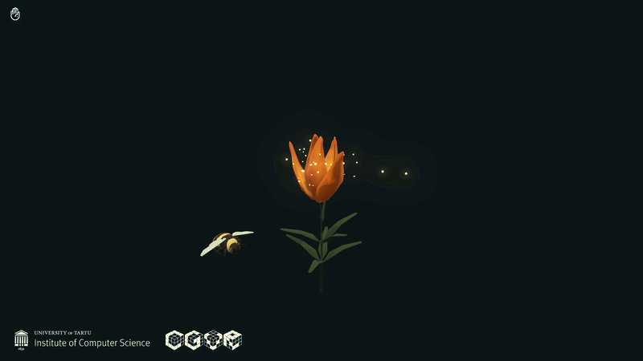

Three artworks.
Same gesture vocabulary, three distinct aesthetic worlds.

Rock–Paper–Scissors
Gestures spawn animated 3D objects that flock and battle using Boids logic and rock-paper-scissors collision rules. A competitive dynamic emerges naturally across multiple players.

Bloom
Each detected hand spawns a bee that keeps following the user's hand as long as its detected. Holding still blooms a lily — a persistent trace of the visitor's presence. Extended from the original Lily artwork.

Lavalamp
A fist pulls fluid particles inward; an open palm pushes them away. Multiple users create competing fluid forces. Each interaction leaves a permanent trace on the simulation.